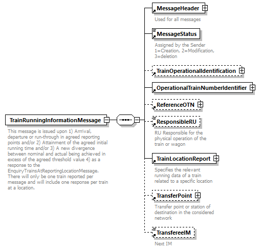

| diagram |  | ||
| namespace | http://taf-jsg.info/schemes | ||
| properties |
|
||
| children | MessageHeader MessageStatus TrainOperationalIdentification OperationalTrainNumberIdentifier ReferenceOTN ResponsibleRU TrainLocationReport TransferPoint TransfereeIM | ||
| annotation |
|
||
| source | <xs:element name="TrainRunningInformationMessage"> <xs:annotation> <xs:documentation>This message is issued upon 1) Arrrival, departure or run-through in agreed reporting points and/or 2) Attainment of the agreed initial running time and/or 3) A new divergence between nominal and actual being achieved in excess of the agreed threshold value 4) as a response to the EnquiryTrainsAtReportingLocationMessage. There will only be one train reported per message and will include one response per train at a location.</xs:documentation> </xs:annotation> <xs:complexType> <xs:sequence> <xs:element ref="MessageHeader"/> <xs:element ref="MessageStatus"> <xs:annotation> <xs:documentation>Assigned by the Sender 1=Creation, 2=Modification, 3=deletion </xs:documentation> </xs:annotation> </xs:element> <xs:element ref="TrainOperationalIdentification" minOccurs="0"/> <xs:element ref="OperationalTrainNumberIdentifier"/> <xs:element ref="ReferenceOTN" minOccurs="0"/> <xs:element ref="ResponsibleRU" minOccurs="0"/> <xs:element ref="TrainLocationReport"/> <xs:element ref="TransferPoint" minOccurs="0"/> <xs:element ref="TransfereeIM" minOccurs="0"/> </xs:sequence> </xs:complexType> </xs:element> |